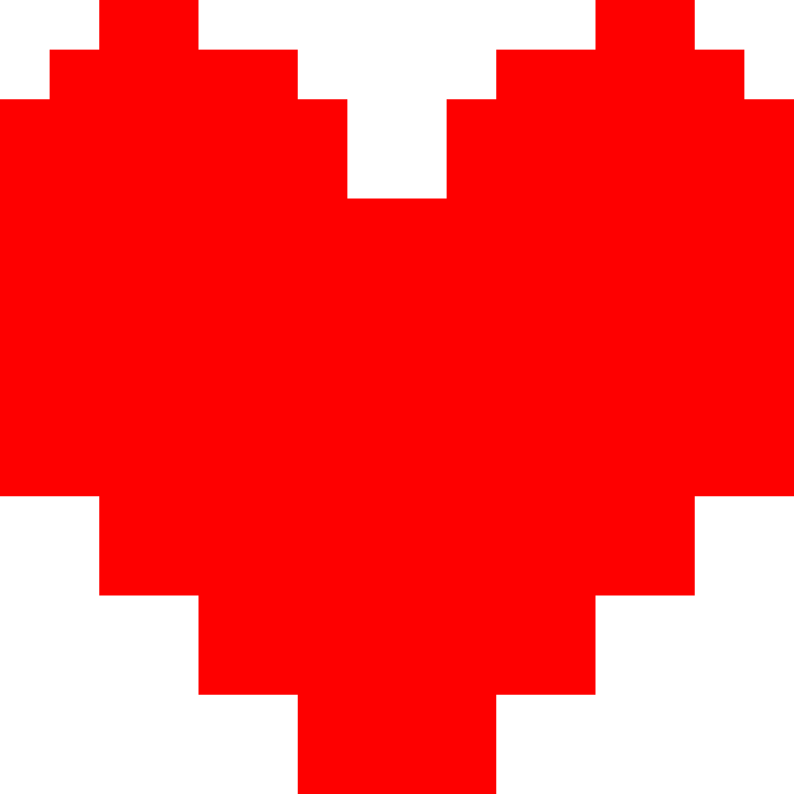
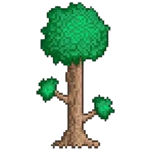
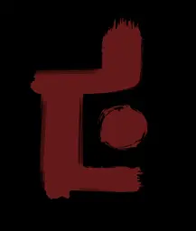
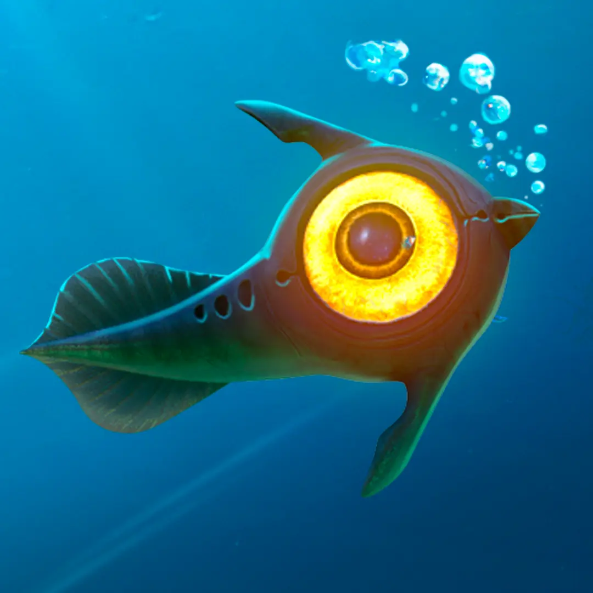
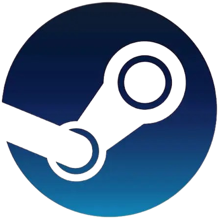
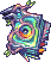
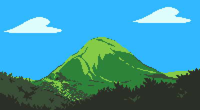

Чем я вообще занимаюсь?!
Здесь я перечислил и кратко описал свои увлечения.
Возможно, их не так уж и много, но зато я могу уделять больше времени каждому из них.
Итак, я увлекаюсь:
-
Компьютерными играми, из любимых:
- Deltarune
-

Undertale -

 Terraria (особенно Calamity mod)
Terraria (особенно Calamity mod) -
 ULTRAKILL
ULTRAKILL
-
 FAITH
FAITH
-

DUSK -

Subnatica
- Чтением книг
- Прогулками по горам
- Программированием


